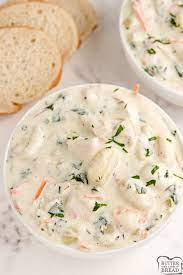

Chicken and Gnocchi Soup
Ingredients

- 3-4 boneless skinless chicken breasts, cooked and diced
- 1 stalk of celery, chopped
- 1/2 white onion, diced
- 2 tsp of minced garlic
- 1/2 cup of shredded carrots
- 1 tbsp of olive oil
- 4 cups of low sodium chicken broth
- salt and pepper, to taste
- 1 tsp of thyme
- 16 oz of potato gnocchi
- 2 cups of half and half, see note
- 1 cup of fresh spinach, roughly chopped
Instructions
- Heat olive oil in a large pot over medium heat. Add celery, onions, garlic, and carrots and saute for 2-3 minutes until onions
are translucent
- Add chicken, chicken broth, salt, pepper, and thyme, bring to a boil, then gently stirin the gnocchi. Boil for 3-4 minutes before reducing heat
to a simmerand cooking for 10 minutes.
- Stir in half and half, and spinach and cook for another 1-2 minutesuntil spinach is tender. Taste, add salt and pepper if needed,
and serve.
Note
Milk: For even more creamy richness, swap one cup of the half and half for heave cream.
[Back to Appetizers]
[Home]